Gift Card Redemption Flow
Bridging physical retail and digital crypto — a gift card redemption flow designed for both first-time and returning RockWallet users.
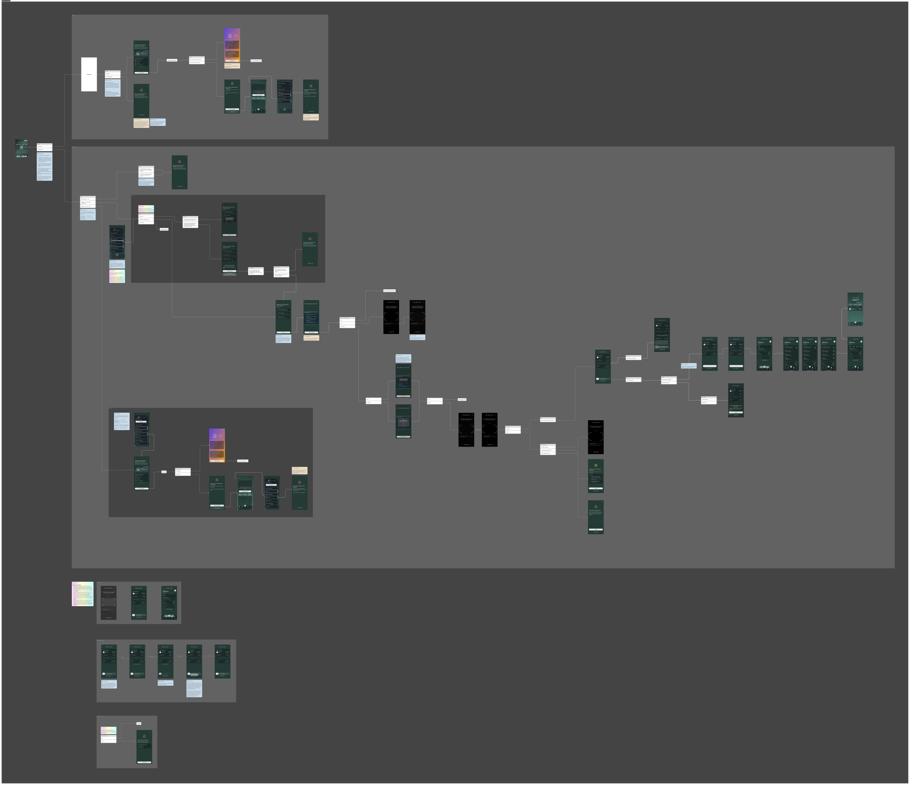
Overview
RockWallet is launching physical crypto gift cards available for purchase at merchants across the United States — a strategic move to lower the barrier to entry for new crypto users. Physical gift cards require no prior crypto knowledge — just a card purchased in-store and redeemed in the app.
To support this launch, a gift card redemption flow was designed within the app, allowing users to redeem their gift card and transfer the balance directly into their RockWallet account. The flow is designed to serve both existing RockWallet users and new users — anyone who purchases a gift card but does not yet have an account will be guided through the sign-up and onboarding process before completing their redemption. This creates a natural acquisition funnel: a gift card purchase becomes the entry point into the RockWallet ecosystem.
The redemption flow is currently available to users in permitted US states only — users outside the US or in non-permitted states are not eligible at this time, in line with RockWallet's existing geolocation-based access controls.
The Problem
- RockWallet had no in-app gift card redemption flow — without it, users who purchased a physical gift card had no way to access or transfer their balance
- The flow needed to feel as simple and familiar as any standard retail gift card experience — enter a code, see a balance, confirm — while adapting that pattern to a crypto wallet context
- Users purchasing a gift card at a physical merchant may be new to crypto entirely, so the experience needed to be approachable and self-explanatory without requiring prior product knowledge
- The flow needed to meet compliance requirements — including redemption limits of $500 per day and $2,000 per year — and these limits needed to be clearly communicated to users at the right moment without creating unnecessary friction
- Geolocation gating was required to restrict access to permitted US states only. Since RockWallet did not yet have native geo-blocking in the app, the solution required prompting users to enable GPS on their device — adding a design challenge around how to communicate this requirement clearly and without alarming users
- A range of edge cases needed to be accounted for and designed around, including: invalid or already-redeemed codes, users hitting daily or annual redemption limits, users in non-permitted locations, users without GPS enabled, and network or connectivity failures
Research
Crypto gift cards are not an entirely new concept — platforms such as Coinbase and Binance have offered digital crypto vouchers in various forms. However, RockWallet's approach is distinct: a physical gift card distributed through retail merchants, designed to reach everyday consumers at the point of purchase rather than targeting existing crypto users online.
Research focused on how established gift card redemption experiences work across well-known platforms — including Apple, Amazon, and Shoppers Drug Mart — as these represent the patterns users already know and expect: enter a code, confirm a balance, and apply it. The goal was to adapt these familiar, proven patterns into a crypto wallet context, keeping the experience as simple and recognizable as possible for users who may be encountering a crypto gift card for the first time.
The key design challenge was bridging the gap between a familiar retail expectation and the additional requirements specific to a crypto product — geolocation gating, compliance limits, GPS prompting, and new user onboarding — without making the flow feel more complex than a standard gift card redemption.
Note
RockWallet defines seven geolocation categories based on a user's region, each determining which features they can access within the app. Gift card redemption is exclusively available to Category 1 users — those located in permitted US states.
Design Process — A selection of key design decisions that shaped the flow.
Entry Point & Access Rules
The gift card redemption flow begins with a physical action — the user scans the QR code on the back of the gift card, which launches the redemption flow directly. Users can also access the flow through the profile drawer within the app.
Access to the gift card redemption flow is governed by the following rules:
- Category 1 users only — redemption is restricted to Category 1 users (permitted US states). The "Gift Cards" option is not visible to users outside Category 1 — they will not see it in the profile drawer
- KYC required — users must have completed KYC (Level 2) before accessing the redemption flow. Level 1 users will be prompted to complete KYC before they can proceed — if KYC is passed, they may continue with redemption; if KYC fails, they cannot
- New users — users who do not yet have a RockWallet account will be routed through sign-up and KYC before accessing the redemption flow. The gift card purchase becomes the entry point into the RockWallet ecosystem
These access rules follow the same geolocation category logic established across the product — the same category system used in the Settings address update flow. This consistency meant the access restriction patterns and messaging were already defined, allowing the design to reuse existing components and states rather than introducing new patterns.
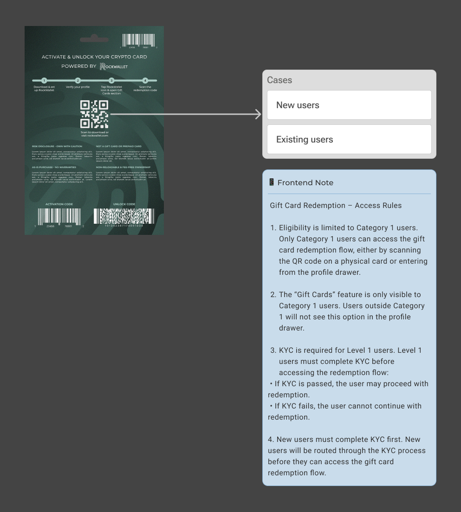
New User Flow — Onboarding to Redemption
For users who do not yet have a RockWallet account, the QR code scan becomes the starting point for their entire onboarding journey. New users are routed through the sign-up and KYC process before accessing the redemption flow — but the gift card context is never lost. Once KYC is successfully completed, users are taken directly back to the gift card redemption flow, so they can complete their redemption without having to find their way back manually.
If the user's geolocation maps to a non-Category 1 region during onboarding, they will be informed that gift card redemption is not available in their area — and the "Gift Cards" option will not be visible in the profile drawer.
If KYC fails, a dedicated screen informs the user that gift card redemption is not available — clearly communicating that the verification did not go through and directing them to contact support for further assistance.
Geolocation Category Handling for New Users
- Geolocation gating for new users — when a new user scans the QR code and goes through onboarding, their geolocation category is determined during the process. Category 1 users (permitted US states) will see the "Gift Cards" feature in the profile drawer; new users mapped to Categories 2–5 will not see the feature and cannot access the redemption flow
- New user passes KYC — Category 1 new users who successfully complete KYC are taken directly back to the gift card redemption flow, so they can complete their redemption without any additional navigation — the gift card context is never lost
- New user fails KYC — if a new user's KYC verification is unsuccessful, a dedicated screen informs them that gift card redemption is not available, clearly communicating the reason and directing them to contact support for assistance
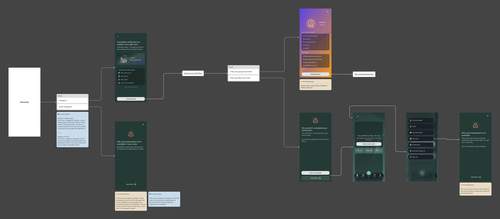
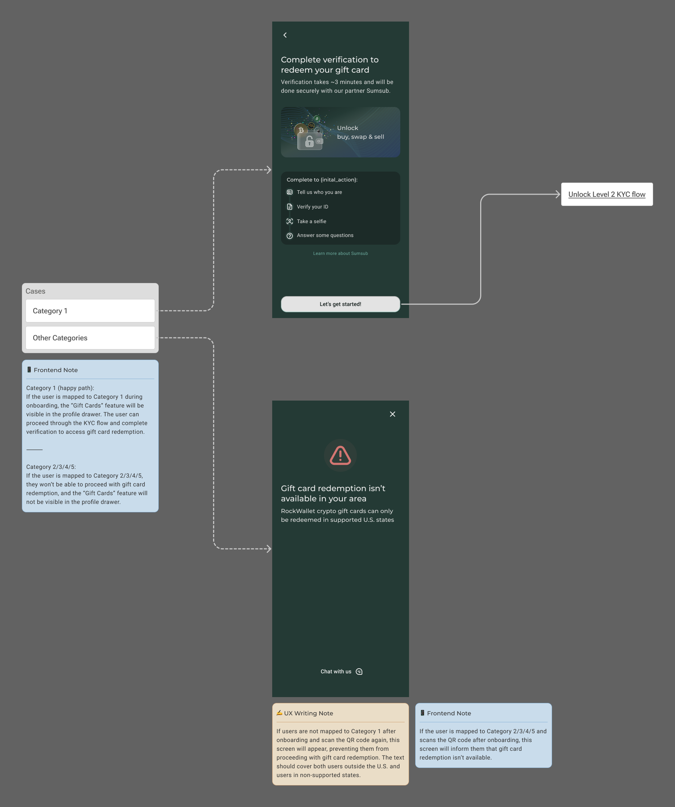
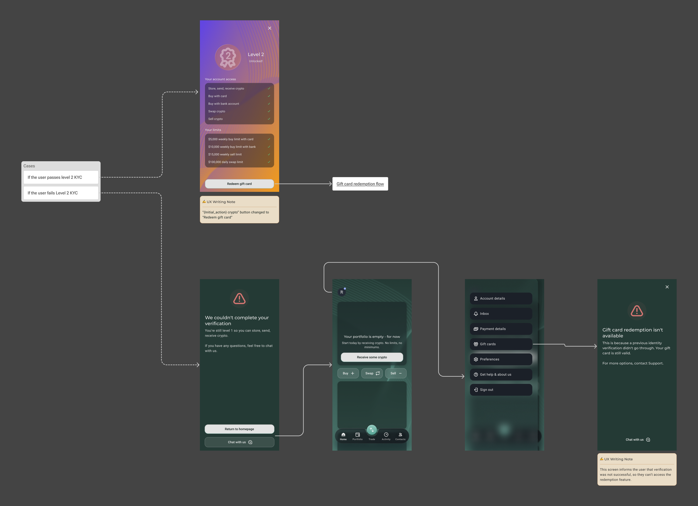
Existing Users — Entry & KYC Gating
For existing RockWallet users, the gift card redemption flow can be accessed by scanning the QR code on the physical card or through the "Gift Cards" option in the profile drawer. Three user states are handled at the point of entry:
- Non-Category 1 user — the user is outside a permitted US state. The "Gift Cards" feature is not visible in the profile drawer and the user cannot access the redemption flow
- Category 1 + Level 2 user (happy path) — the user is in a permitted state and has completed KYC. They proceed directly into the gift card redemption flow
- Category 1 + Level 1 user — the user is in a permitted state but has not yet completed KYC. They are routed into the existing Level 2 KYC flow before being able to proceed with redemption. Once KYC is successfully completed, they are taken directly into the redemption flow
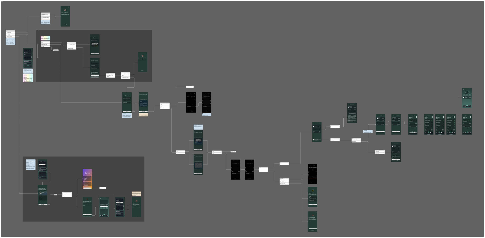
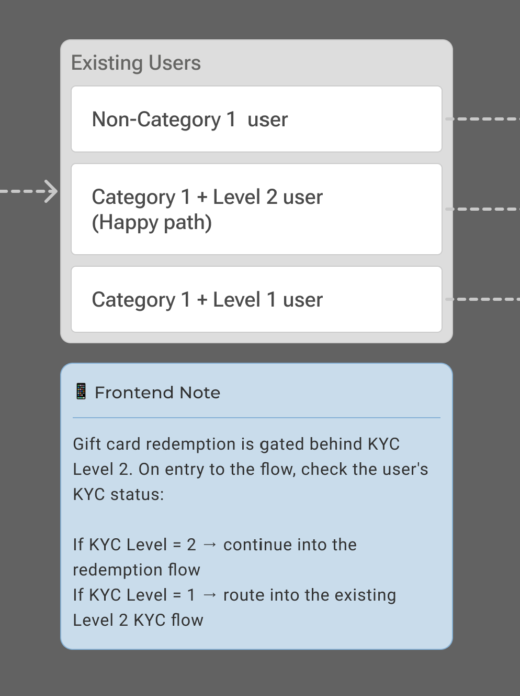
Non-Category 1 Users — Access Restricted
For existing users who are verified (Level 2) but not mapped to Category 1, scanning the QR code on the physical gift card will surface a dedicated "Redemption not available" screen — clearly explaining why the feature is inaccessible.
The same applies during onboarding: if a new user's geolocation does not map to Category 1, or if their KYC result does not place them in Category 1, they cannot proceed with gift card redemption. In all cases, a dedicated screen appears to inform the user of the restriction — ensuring they always understand why the feature is unavailable rather than encountering a dead end with no explanation.
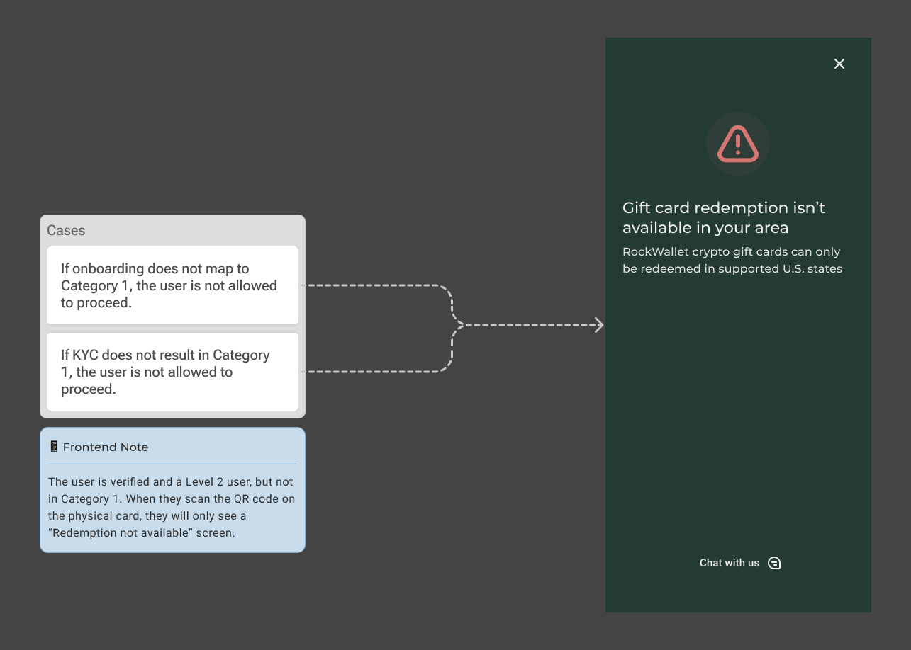
Category 1 + Level 1 User — KYC Required
Gift card redemption is gated behind KYC Level 2. For existing users who are in Category 1 but have not yet completed verification, the flow routes them into the existing Level 2 KYC process before they can proceed. Once KYC is approved, the user is returned directly to the gift card redemption flow — the context is never lost. If KYC is rejected, a dedicated screen appears to inform the user that the feature is unavailable, ensuring they always have a clear understanding of their status rather than hitting an unexplained dead end.
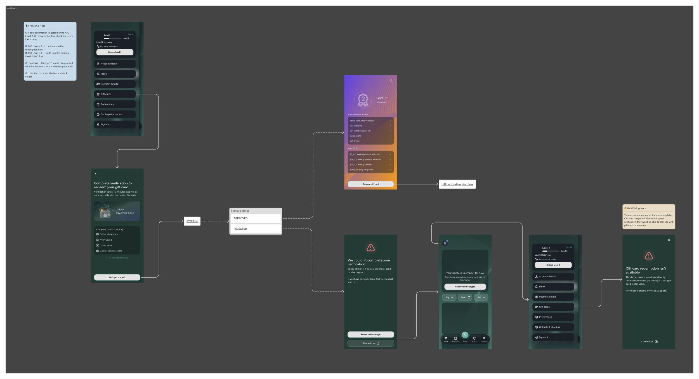
Enabling GPS — Location Verification
Since RockWallet does not currently have native geo-blocking or a third-party geolocation service integrated for this flow, GPS was proposed as the solution for location verification — as gift card redemption is only available in permitted US states, confirming the user's physical location at the point of redemption was a necessary compliance requirement.
When a user attempts to access the gift card redemption flow, the app checks whether location permissions have been granted. If GPS is not enabled, a dedicated screen prompts the user to turn on their device's location services and return to the app to continue.
This is a temporary solution that allows the product to launch with location-based access controls in place — while a more robust geo-blocking solution is being developed in parallel by another team. Once the geo-blocking approach is confirmed, the design will be revisited and iterated to replace the manual GPS prompt with a seamless, native location verification experience.
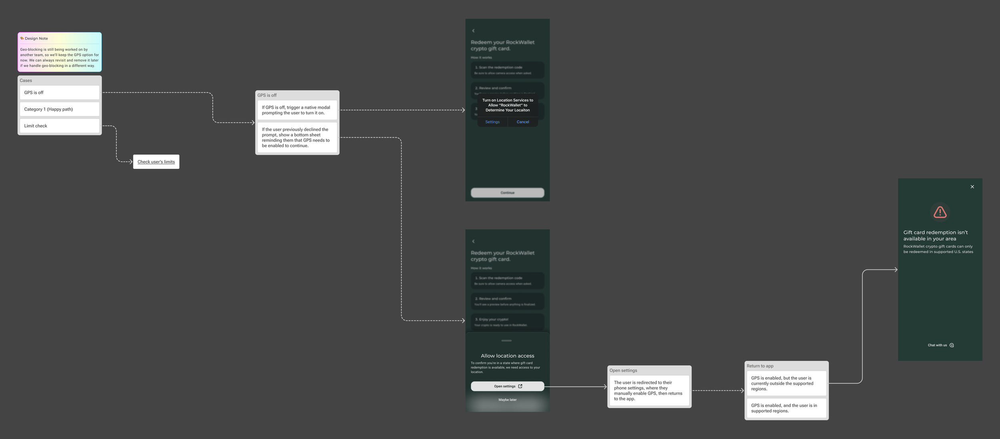
Start Redemption — Post-GPS & Anti-Scam
Once GPS is enabled and the user returns to the app, they are brought into the redemption flow. A key open question at this stage was whether users who manually enable GPS in their phone settings could return directly to this screen — rather than having to scan the QR code again from the beginning. This is a technical feasibility question flagged for the development team to confirm before launch.
Before proceeding with the redemption, the standard anti-scam page is presented — consistent with the anti-scam language used across the product. This is a compliance requirement ensuring users are aware of potential scam risks before redeeming a gift card. The same pattern is reused here to maintain consistency and reduce build effort.
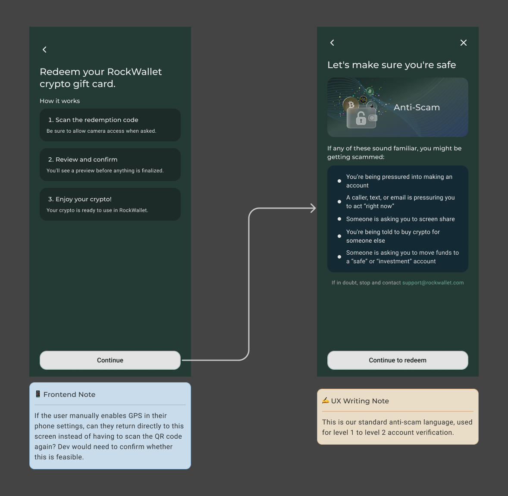
Camera Access & Code Scanning
The next step requires camera access to scan the gift card code. Three states are handled at this point:
- Camera access granted (happy path) — the user scans the gift card code directly using their camera, the code is read, and the flow continues
- Camera access not granted — if camera access has not been allowed, the user is given the option to manually input the gift card code instead, ensuring they are never blocked from completing a redemption
- Camera access turned off — the native iOS or Android modal prompts the user to enable camera access in their device settings manually
Similar to the GPS step, an open question was flagged for the development team: if a user manually enables camera access in their phone settings, can they return directly to this screen rather than having to scan the QR code again from the beginning? This needs to be confirmed before launch to avoid unnecessary friction in the flow.
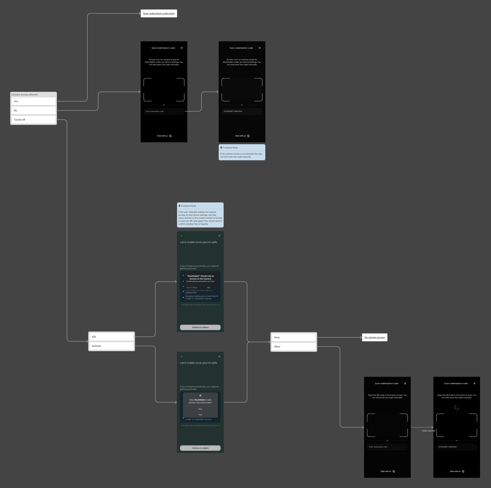
Redemption Limits
Gift card redemption is subject to compliance-defined limits: $500 per day and $2,000 per year, per customer. The limit check happens at the start of the flow — if a user has already reached their daily or annual limit, they are informed before proceeding. If the annual limit is exceeded, a due diligence review is required before further redemptions can be made.
To keep the flow lightweight, a single screen is used to cover all limit-reached scenarios — whether the user has hit the daily or annual cap. Rather than designing separate states for each case, one clear, informative screen handles all limit types, reducing complexity without sacrificing clarity.
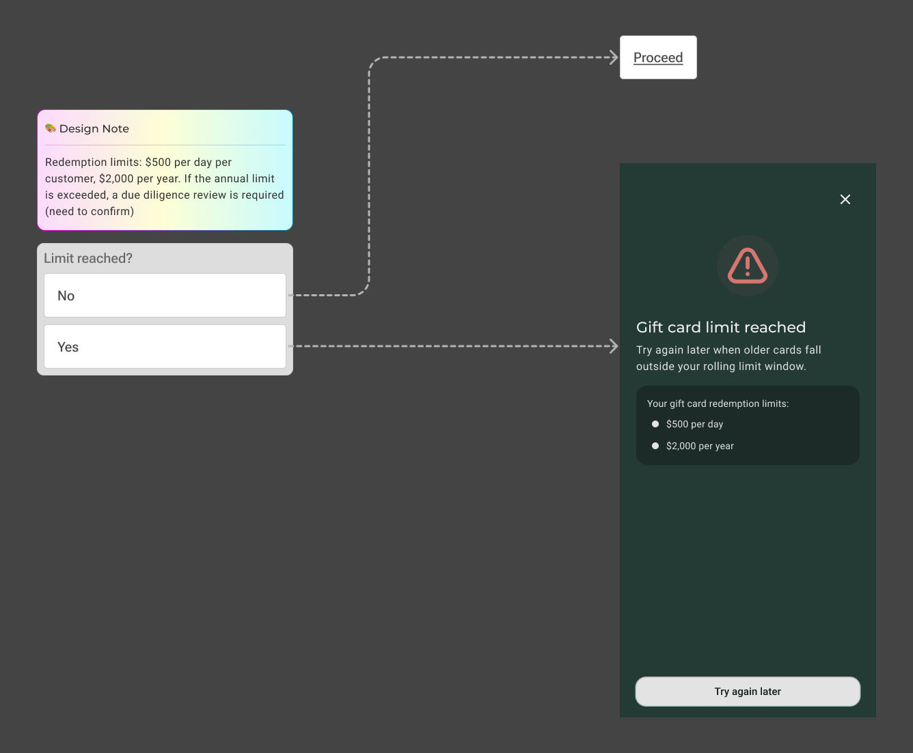
Happy Path
Once the gift card is scanned successfully, the redemption flow begins. Due to the nature of blockchain technology, loading the redeemed amount into the app may take a moment — users will see a loading state when they swipe to redeem, ensuring they're informed that the process is in progress rather than encountering an unexplained delay.
A step progress tracker is used in the final step of the flow to give users a clear sense of where they are in the redemption process. The four steps were defined by the PM and Compliance team to reflect the actual requirements of a crypto gift card redemption.
The step progress component already existed in the design system — making it a natural choice to reuse. This was a deliberate design decision that balanced stakeholder requirements, development effort, and user experience. Rather than building from scratch, reusing the existing component kept implementation efficient while still delivering a clear, guided experience for the user. Minor iterations were made where needed to best fit the redemption context, without introducing unnecessary build effort.
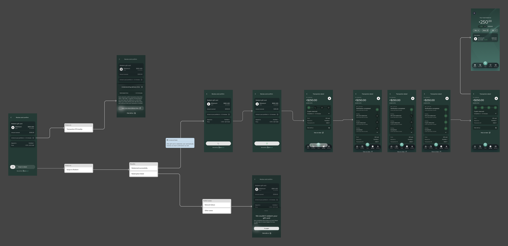
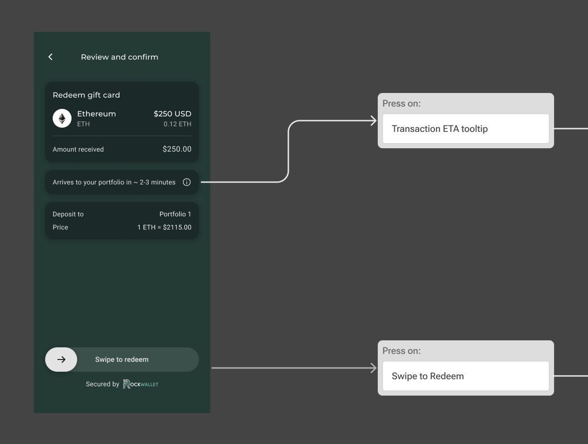
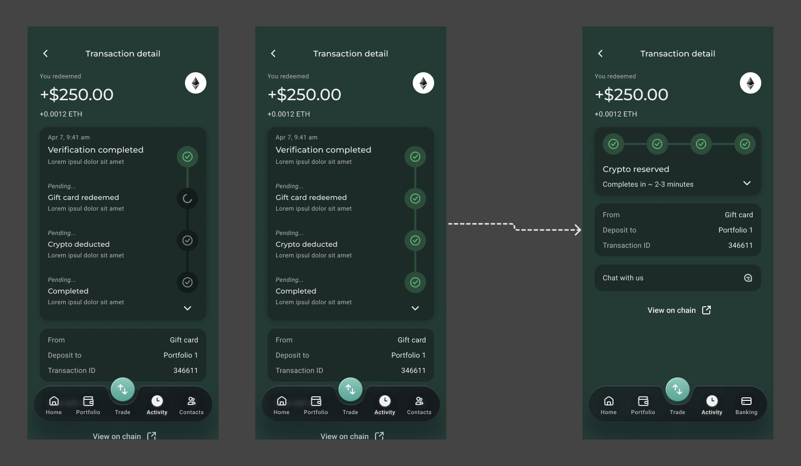
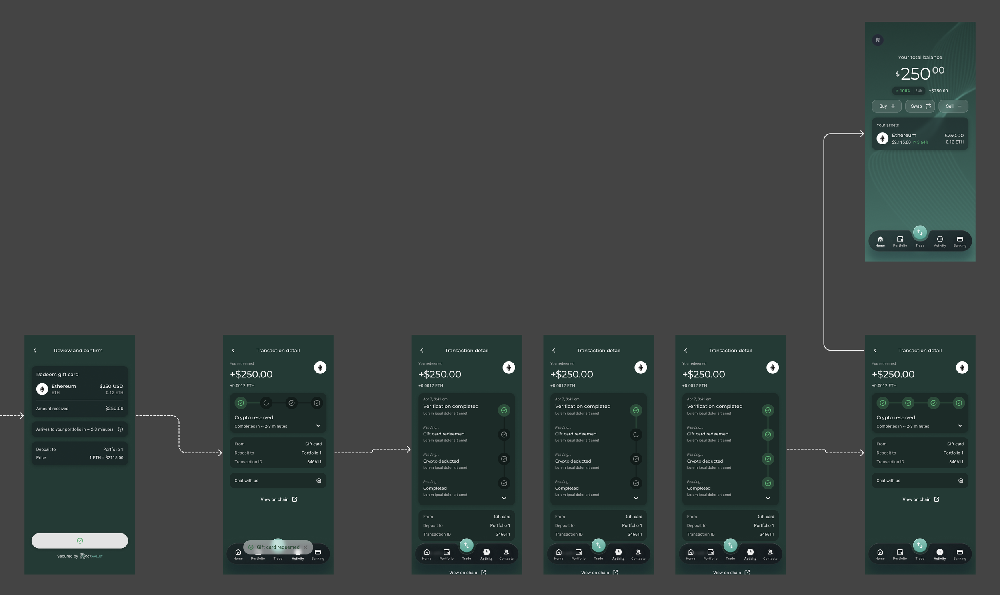
Price Quote Refresh
If the user switches between entering a fiat or asset amount, all dependent values — including the amount to be sold and the received value — update automatically. To avoid last-second changes, the slider is disabled when 5 seconds remain on the quote timer. Since this is a confirmation screen, feedback is kept subtle and reassuring: updated values are highlighted with a temporary color change, and a toast message confirms the refresh without disrupting the flow. The update logic always follows the user's primary input — if the user entered $100, that number stays fixed; if they entered 0.002352342 BTC, that stays fixed instead. The anchor is always what the user typed.
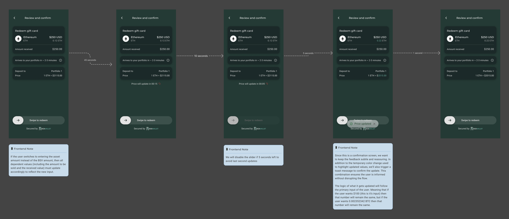
Edge Cases
Defining edge cases is an essential part of every flow — as a designer, anticipating failure states and designing clear recovery paths prevents dead ends and protects the overall user experience.
To keep the flow lightweight while ensuring all scenarios are handled, three edge case states were defined:
- Already redeemed — the gift card code has already been used and cannot be redeemed again
- Card not activated — when a user purchases a physical gift card, the merchant must activate it at the point of sale before it can be redeemed. If activation hasn't occurred, the user is informed with a clear explanation
- Other errors — a generic error state covers any remaining failure types, ensuring users always see a meaningful message rather than a blank or broken screen
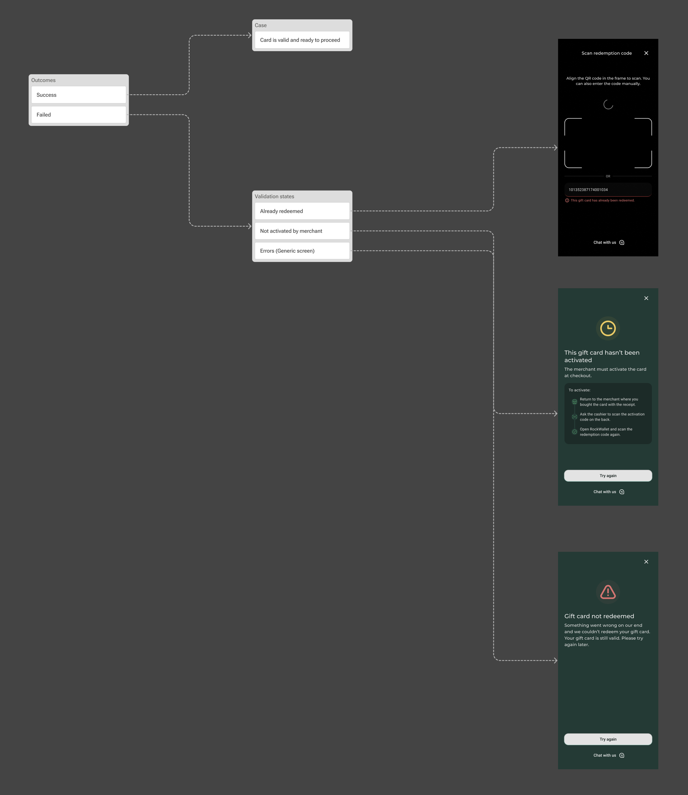
Design Challenges
The gift card redemption flow presented several unique design challenges that required careful thinking across UX, compliance, and technical constraints.
- Geolocation without native geo-blocking — at the time of design, RockWallet did not have a native geo-blocking solution in place. Proposing GPS as a temporary workaround required designing a clear, non-alarming prompt that explained why location access was needed — without making users feel surveilled or creating unnecessary friction at the start of the flow
- Designing for multiple user states — the flow had to account for a wide range of entry conditions: new users with no account, existing Level 1 users requiring KYC, existing Level 2 users in non-permitted regions, and users who had hit their redemption limits. Each state needed a dedicated, clear response — while keeping the overall flow lightweight and avoiding a sprawling decision tree
- Communicating compliance requirements without friction — redemption limits, KYC gating, and the step-by-step redemption process are all compliance-driven requirements. The design challenge was surfacing these requirements at the right moment, in the right tone — informative and reassuring rather than restrictive or alarming
- Working within existing constraints — reusing design system components and designing around third-party dependencies (GPS, Sumsub, blockchain load times) meant the design had to work within what already existed, rather than starting from a blank canvas. Finding the right balance between what could be iterated and what had to be accepted as a constraint was an ongoing part of the process
Collaboration
Gift card redemption was one of the more cross-functional projects I worked on at RockWallet. The flow touched compliance requirements, third-party integrations, engineering constraints, and business strategy — making close collaboration with the team essential throughout.
I worked closely with the PM to align on scope, understand the PRD, and confirm compliance requirements — including redemption limits, KYC gating, and the four-step redemption structure defined with Compliance. Stakeholder meetings were a regular part of the process, where I presented design solutions, raised concerns, and balanced business requirements with user needs to arrive at feasible, well-reasoned decisions.
Collaboration with engineers was equally important. Reusing existing design system components was a deliberate decision made in partnership with the development team to reduce build effort without sacrificing UX quality. Open questions — such as whether users could return directly to the redemption screen after enabling GPS — were flagged early and tracked for confirmation before development began.
Throughout the process, I worked alongside the design lead, iterating on flows, pressure-testing design decisions, and ensuring the experience remained consistent with the broader product direction.
Outcomes
The gift card redemption flow delivered a simple, familiar redemption experience on top of what is technically a complex product — handling geolocation gating, KYC verification, compliance limits, and multiple user entry states without exposing that complexity to the user.
This project strengthened my ability to navigate cross-functional constraints simultaneously — balancing business requirements, compliance rules, engineering effort, and user needs. It also reinforced that working thoughtfully within existing constraints can produce a more coherent and scalable product experience than building from scratch.
What's Next
The gift card redemption flow was designed as a foundation — several items were deferred during the design process and are planned for future iterations:
- Native geo-blocking — the GPS prompt is a temporary solution. Once the geo-blocking infrastructure is confirmed by the parallel team, the location verification experience will be revisited and replaced with a seamless, native approach
- Expanding to more states — the flow is currently available in permitted US states only. As RockWallet expands its licensing, the geolocation gating will be updated to reflect new eligible regions
- Mandatory KYC phone verification at onboarding — enforcing phone number collection as a required step at Level 2 KYC onboarding is an active consideration, building on the patterns established in the Settings phone flow
- Session resume — if a user abandons mid-flow (e.g. while enabling GPS or camera access), they currently restart from the beginning. A future iteration could introduce session resume behaviour to reduce unnecessary friction